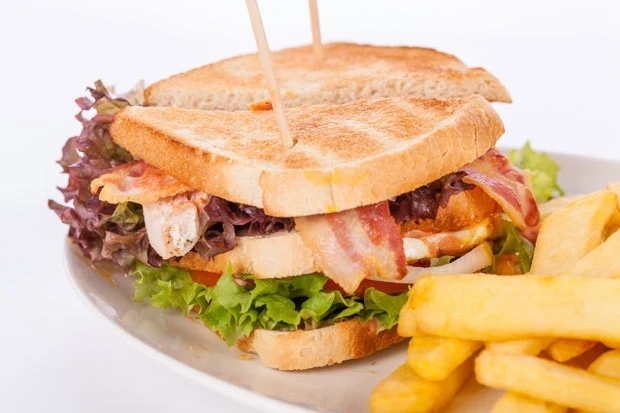

VIP-Club-Sandwich

Ein gesundes VIP-Club-Sandwich aus getoastetem Brot, Mayonnaise, Huhn, Tomaten, Gurken und knusprigem Speck. Das perfekte Snack Rezept!
Zutaten (für zwei Personen)
- 6 Scheiben Brot
- 4 EL Mayonnaise
- 4 Scheiben Hühnerbrust (gekocht)
- 1 Kopf Eisbergsalat
- 2 Eier
- 2 Tomaten (in Scheiben geschnitten)
- 1/2 Gurke (in Scheiben geschnitten)/li>
- 4 Scheiben knusprigen Speck
- Das Brot toasten. Mayonnaise auf 2 Scheiben des getoasteten Brotes geben.
- Mit etwas Salat, Tomaten, Gurke und einer Scheibe Hühnerbrust bedecken. Eine weitere Scheibe Brot oben auf das Huhn legen und mit etwas Mayonnaise bedecken.
- Salat, Tomate, Gurke und den knusprigen Speck auf das Brot geben. Zum Schluss die zweite Scheibe Toastbrot auf den Speck legen.
- Die Sandwiches diagonal halbieren und mit Cocktailspießen fixieren. Mit Rohkost servieren.